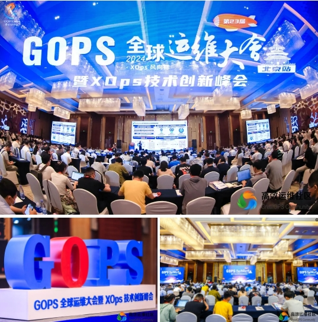
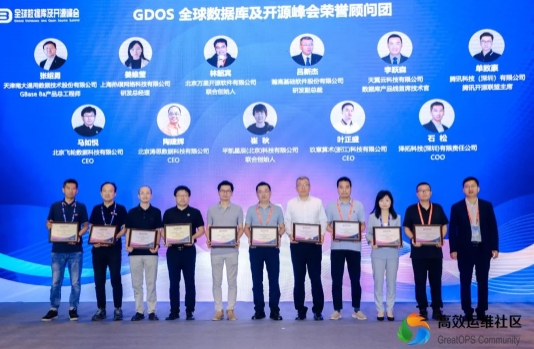

展会 | 荣誉当选！万里数据库亮相全球运维大会 联合创始人当选全球数据库及开源峰会荣誉顾问
2024年6月28日，第二十三届GOPS全球运维大会暨XOps技术创新峰会在北京盛大召开。

作为国产数据库领域领军企业，万里数据库联合创始人林韶宾在会上当选全球数据库及开源峰会荣誉顾问。

上午主会场上，YDB首席执行官安德烈与首席产品官奥列格发表了会前致辞，并宣布下一届开源社区会议——第二届GDOS全球数据库及开源峰会将在今年11月举行。
GDOS 全球数据库及开源峰会
GDOS全球数据库及开源峰会由NextArch Foundation、DAOPS Foundation指导，高效运维社区主办，旨在为数据库、开源技术领域专业人士、企业家和技术爱好者提供技术共享平台，聚焦全球开源生态最新发展与前沿技术动态，汇聚全球杰出技术领袖，分享前沿见解和经验，深入探讨数据库的演变，探索开源技术在不同行业中的创新应用，洞悉如何在当今数字化时代塑造企业的未来。
而GDOS全球数据库及开源峰会荣誉顾问的评选与颁布，旨在汇聚国内数据库领军人物力量，依托优秀的国内数据库公司平台，持续引领数据库产业发展，推动数据库产业实现高质量发展。
在主会场的GDOS全球数据库及开源峰会荣誉顾问授牌仪式环节，万里数据库联合创始人林韶宾与来自南大通用、热璞、瀚高、天翼云、腾讯、飞轮、陶思、PingCAP、玖章算术、泽拓科技的10家数据库企业高管，共同上台参与了荣誉顾问授牌仪式，后续大家将在产业调研、行业研究、技术演进引领、平台交流等多方面建言献策，持续助力数据库产业实现技术创新和商业发展布局。
在不断发展和日益数字化的时代，数据库和开源技术已经成为信息技术生态系统的两大核心支柱，行业应用对数据库的需求变化也在推动数据库技术实现加速创新。
数据库如何助力企业在日新月异的发展趋势下稳步向前，在质量、效率与安全间取得平衡？应用场景的不断演变与发展，给数据库厂商带来了诸多挑战，但相信凭借着国产数据库公司的多方探索与不懈创新，将会得到越来越成熟、可靠的答案。